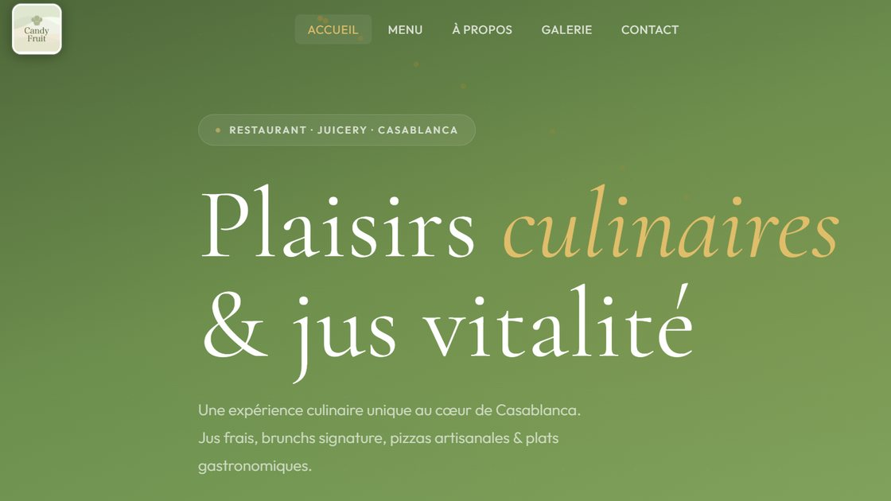
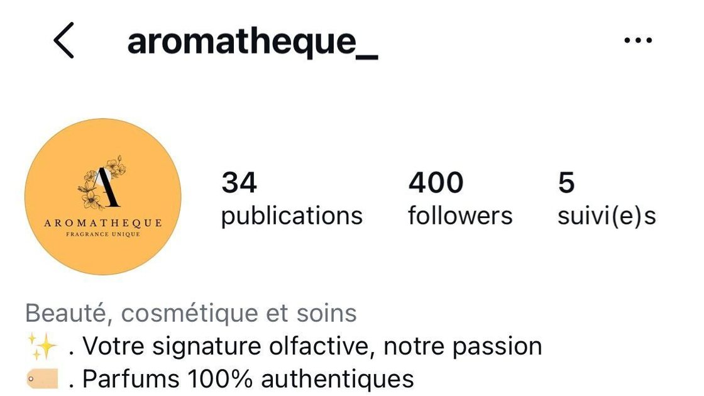
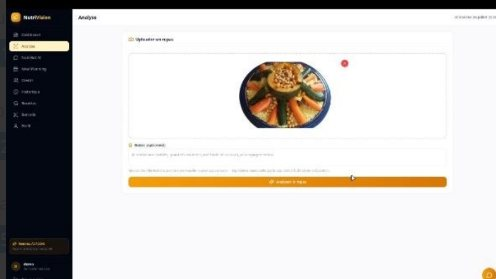

Stratégie social media
Positionnement éditorial, calendrier de contenu, gestion des réseaux et personal branding des consultants.
Stratégie marketing, contenu, développement web et IA : une équipe pluridisciplinaire, une approche structurée, des solutions adaptées à vos objectifs.
Une offre coordonnée, avec un périmètre défini selon vos objectifs et vos priorités.
Positionnement éditorial, calendrier de contenu, gestion des réseaux et personal branding des consultants.
Analyse des KPI, recherche concurrentielle, suivi des performances et recommandations SEO.
Création de sites web, mise en valeur des services et cohérence entre site et communication.
Exploration de solutions d'IA, compétences en données, bases de données et environnement cloud.
Compréhension du besoin, relation client, valorisation des offres et communication orientée objectifs.
Pour une activité de conseil financier, la qualité du message compte autant que sa visibilité.
Notre priorité : rendre votre expertise lisible et crédible.
Des contenus utiles, une présence cohérente et un parcours clair vers la prise de contact.
Un cadre de travail fondé sur la validation des contenus métier par l'expert.
Clarifier le positionnement, mettre en valeur l'équipe et présenter les services de façon cohérente.
Transformer les questions fréquentes en contenus simples : carrousels, FAQ, mini-guides et explications.
Renforcer la présence sur les canaux pertinents et faciliter la compréhension des prochaines étapes.
Chaque contenu portant sur un sujet financier est soumis à validation avant publication.
Les livrables, la fréquence et les responsabilités sont fixés après le cadrage initial.
État des lieux des réseaux, du site et des contenus existants. Repérage des priorités.
Objectifs, audiences, piliers de contenu, ton éditorial et calendrier de publication.
Organisation des publications, suivi des réseaux et personal branding des consultants.
Visuels, carrousels, rédaction et montage de formats courts selon les besoins.
Création ou amélioration du site, structuration des pages et bases du référencement.
Suivi des indicateurs pertinents et recommandations selon les résultats disponibles.
Le périmètre final est adapté à vos objectifs, à vos ressources et à votre calendrier.
Sélection de projets menés ou développés dans des contextes différents.

WEBDéveloppement complet du site web et réalisation d'un shooting photographique pour accompagner la présence digitale de l'établissement.

SOCIALProjet appliqué auprès d'une entreprise de parfumerie à Casablanca : stratégie Instagram, analyse des KPI et contribution à la relation client.
 BLED
BLED
Projet d'étude autour de la création d'une petite entreprise de produits du terroir : marketing, suivi des produits et réseaux sociaux.

IAProjet réalisé en équipe pour analyser les repas et soutenir le suivi nutritionnel. Deuxième place obtenue lors d'un hackathon.
PROJET EN COURSSystème d'analyse lunaire en préparation pour un hackathon associé à la NASA.
Chaque étape est structurée pour garder les priorités visibles et faciliter la validation.
Analyser l'existant, les objectifs, les audiences et les supports disponibles.
Définir les messages, les canaux, les piliers éditoriaux et les KPI pertinents.
Préparer les textes, visuels et supports digitaux selon le planning convenu.
Faire valider les contenus par le client avant publication ou diffusion.
Suivre les indicateurs disponibles et recommander les optimisations utiles.
Principe de collaborationTransparence sur le périmètre, validation côté client et suivi des résultats selon les indicateurs retenus.
Marketing, relation client et compétences technologiques réunis autour de vos objectifs.
Master en marketing digital et développement commercial.
Expérience en community management au sein de plusieurs agences de communication. Gestion des réseaux sociaux, création de contenu, stratégie éditoriale et veille concurrentielle.
Licence en Développement Commercial et Gestion de la Relation Client — ESMC Business School.
Mise en pratique du marketing et du suivi des réseaux sociaux dans des projets liés à la parfumerie et aux produits du terroir. Expérience de juge lors d'une compétition nationale de robotique.
Licence en Administration des Systèmes ; Master Big Data & Cloud Computing en cours.
Compétences en programmation, sites web, bases de données, réseaux, cloud et cybersécurité. Participation à un projet IA classé 2e lors d'un hackathon, avec une équipe.
Commençons par une réunion de cadrage, puis transformons vos besoins en actions concrètes et mesurables.
Périmètre, délais et livrables à convenir ensemble.